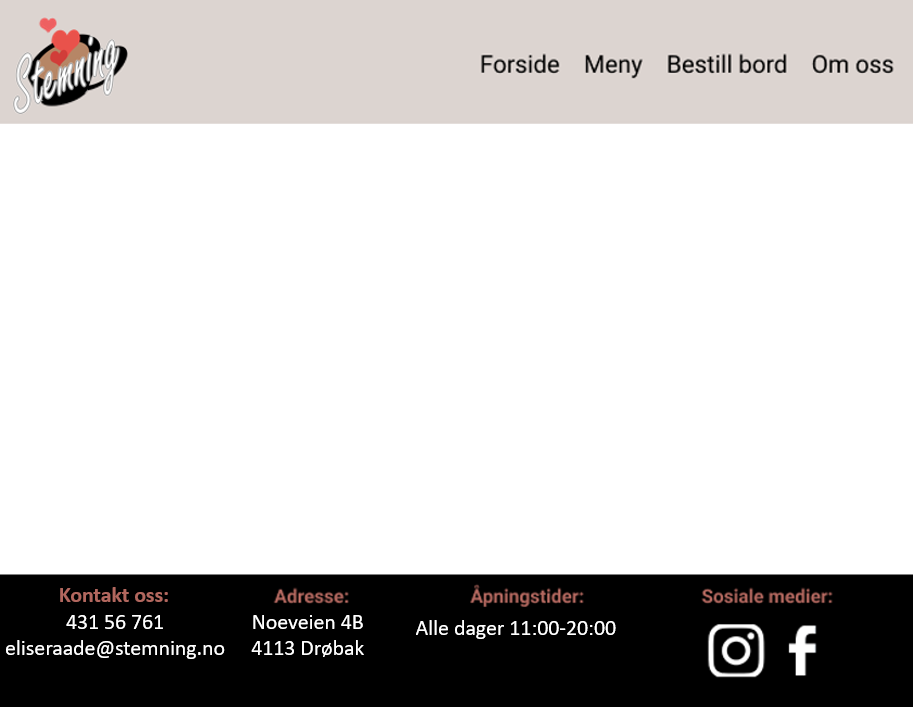
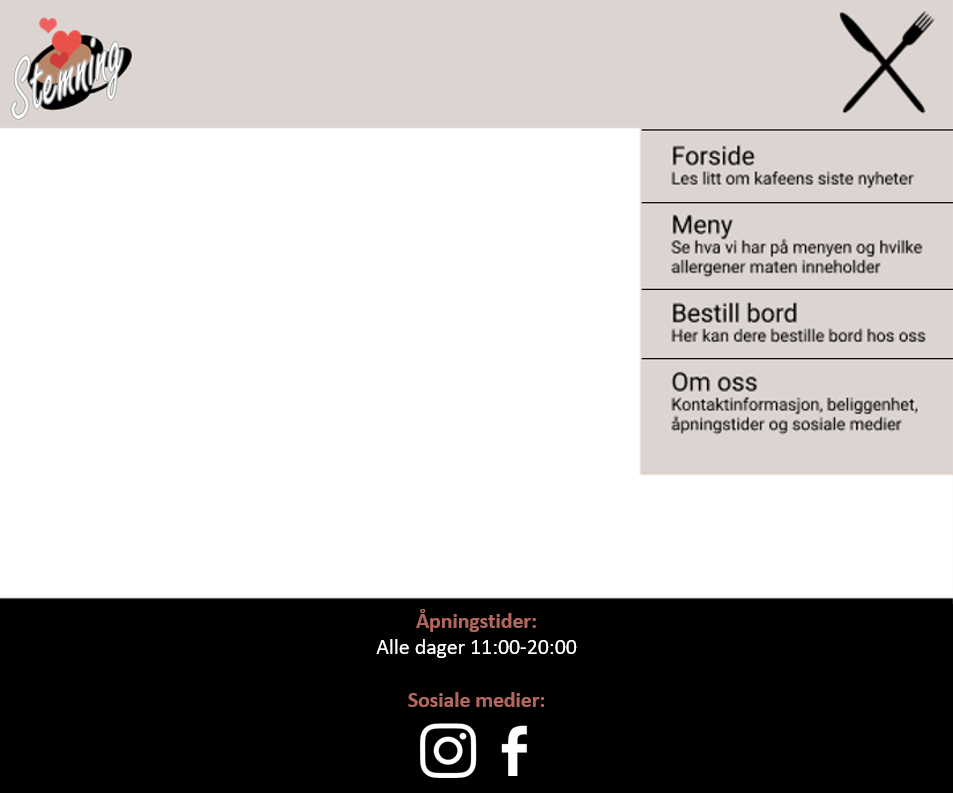
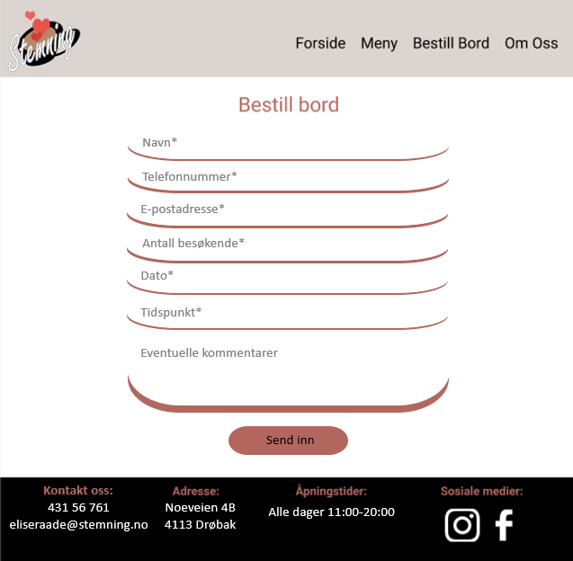

Webteknologi gruppeprosjekt P3: Project changes
Forfattere: Mia Bjørndal, Thea Kvinnegard, Natalie Sørensen Forshaw, Synne Ødegaard, Quynh-Anh Nguyen Pham
04.11.20
Administrative detaljer
Klientens navn: Elise Råde, eier og daglig leder av Stemning kafé.
Nettsidens navn: Stemning kafé
Link til nettsiden: Stemning kafé
Endringer i prosjektet
Siden P2 har vi gjort noen endringer på nettsidens utseende. Dette er rett og slett fordi resultatet av den forrige ideen så veldig uprofesjonell ut. Det var ikke det enkle designet vi hadde sett for oss. Vi har endret fargetema til et mer abstrakt et, det skal virke mer avslappende og gi et enklere design. De nye fargekodene er #DCD4D0 for header, svart for footer, hvit for main, F3F3F3 for meny og #B2675E for litt fargedetaljer på de enkelte sidene. Vi fant også ut at det er like enkelt å ha all CSS i én fil. Dette er også mer oversiktlig enn å ha en felles fil i tillegg til individuelle filer.
For å gjøre siden responsiv og bedre strukturert på mobil har vi lagt til en mediaquery som gjelder når skjermvidden er 890px eller under. Da havner bildene og paragrafene under hverandre på en vertikal linje isteden for side om side. Om bildet og den tilhørende paragrafen skulle vært side om side på en mobil hadde bilde vært veldig lite og teksten hadde vært på en tynn lang spalte. Vi legger til mediaquery-en for å gjøre siden mer mobilvennlig. I tillegg blir navigasjonsbaren i headeren ertsattet med en burgermeny når bredden på siden er 700px eller mindre.
 Felles - felles.js
Vi har kombinert navigasjonsbaren og headeren så det er mindre kaos på toppen av siden før man kommer til det faktiske innholdet. I footeren skulle vi opprinnelig kontaktinformasjon, adresse og sosiale media, eiere av nettsiden og utviklerne av den vil ligge i footeren. Men dette er endret til å inneholde åpningstider og til ikke å inneholde eiere og utviklere
Bildekarusell - forside.js
Den opprinnelige ideen var at for hvert bilde i bildekarusellen så skulle det stå en kort tekst over bildet om en nyhet, et slagord eller en velkomst til kafeen, men vi byttet dette ut med en fast tekst, og så rullerer bildene under teksten.
Meny - meny.html
I P2 står det at det skal skilles mellom vegetarisk og vegansk, men vi bruker bare vegetarisk fordi vi ikke serverer noe som er vegansk. I tillegg har vi flyttet prisen på retten til rett under beskrivelse og allergener, det ser mer oversiktlig ut. I stedet for å sette alle rettene i en lang liste, har vi valgt å vise menyen i forskjellige seksjoner, slik at den er mer oversiktlig. I tillegg vil det være lettere for brukeren å navigere denne menyen, siden det ikke er nødvendig å scrolle mye.
Bordbestilling - bestilling.html
I utgangspunktet skulle brukeren få opp et varsel dersom vedkommende forsøkte å sendte inn en bestilling på bord for mer enn ti personer. Vi har valgt å endre dette til å skrive at man ikke kan bestille bord for mer enn ti personer i beskrivelsen av skjemaet, for så å sette ti som grense for mulig input. Vi har valgt å gjøre denne endringen for å gjøre brukeren klar over denne begrensningen før vedkommende sender inn skjemaet fordi det er unødvendig at brukeren fyller inn et skjema som uansett ikke vil sendes inn, ettersom vedkommende må kontakte kaféen for å bestille bord. Vi har valgt å slå sammen "Fornavn" og "Etternavn" til "Navn", da det er unødvendig å ha to felter for dette; dersom brukeren kun skulle fylle ut ett av navnene, vil kaféen fortsatt kunne se hvem som har reservert bord. I tillegg har vi valgt å erstatte de små spørsmålstegnene fra P2 med placeholdere i input-feltene, ettersom brukeren ikke trenger mer informasjone enn disse placeholderne for å kunne fylle ut skjemaet.
Vi har brukt JavaScript for å implementere placeholdere på "Dato" og "Tidspunkt". Når man ikke benytter seg av inputfeltene har begge inputfeltene type="text" for å tillate placeholder. onmouseover() endres typen til de respektive typene type="date"/type="time". onmouseleave() endres typen tilbake til text så placeholderen vises igjen, men om inputfeltet er focused skal onmouseleave() ikke være aktiv, altså er typene date/time mens feltene er i bruk. Vi har valgt at kunden ikke kan bestille bord for mer enn fire måneder fram i tid, da dette virker realistisk.
Merk at inputfeltene ser noe annerledes ut enn på bildet under
 Om oss - info.html
Vi tenkte først å lage en snapchat-konto for kafeen vår, men vi innser at det er ganske uvanlig, og sannsynligvis ikke noe en kafe-eier hadde hatt lyst til å opprettholde, derfor tar vi den ut av de sosiale mediene vi dekker. Vi kan heller ikke fysisk lage en facebookkonto for kafeen, da ifølge facebook sine rettningslinjer er dette ulovlig. Dermed har kafeen kun en Instagramkonto. Vi har også satt posisjonen på Google Maps til Oscarsborg Festning i Drøbak, ettersom kafeen ikke har en faktisk adresse. Vi har også valgt å implementere Google Maps uten å bruke JavaScript, både fordi vi måtte betale for å bruke API key og fordi det var enklere å kun bruke HTML. Vi ble nødt til å skalere kartet etter pixler i stedet for prosent/andre enheter for å beholde kartet som et interaktivt kart i stedet for et bilde av kartet.
Bildene heter ikke det samme som vi sa i P2 fordi vi har fjernet/byttet ut bilder. Vi har også valgt å inkludere kontaktinformasjon i både footer og på denne siden fordi enkelte brukere kan være vant til å se i footer for å finne denne informasjonen, mens andre forventer å se den på Om oss-siden.
JavaScript-filene
Header og footer: Siden header og footer er lik på alle sidene, er det unødvendig å kopiere koden inn på hver enkelt HTML side. Istedenfor lagde vi et felles JavaScript dokument hvor all HTML kode for header og footer lå, for så å bruke JS for å vise de på sidene.
Bordbestillings-regulering: Når man bruker input-felt, så er det mulig å bruke max og minimums attributter for å tvinge brukerne til å sette de verdiene vi ønsker, ellers vil de få en feilmelding. Derimot fungerte ikke disse attributt som ønsket når vi kun la de inn i HTML dokumentet, så de måtte hardkodes i JS, dette måtte vi gjøre både for dato og tidspunkt. Her la vi også til at minimum og max verdiene på dato inputfeltet var satt til dagens dato og fire måneder frem i tid.
Bordbestillings-innsending: For bordbestilling, løste vi det ved at det kom en alert med infoen brukeren hadde skrevet i inputfeltene når brukeren trykket send inn. På samme måte kom det feilmelding hvis brukeren ikke skrev inn infoen på riktig måte. Det kom en spesifikk feilmelding for hver enkelt inputfelt som var feil.
Bildekarusell: For bildekarusellen droppet vi at bildene skulle blåses opp når man trykket på de, da bildene fylte uansett nesten hele skjermen, og var dermed stor nok fra før av. Vi kom fram til at å da blåse opp bildene kun ville skape forvirring. I tillegg ble ikke overgangen mellom bildene en forskyvning, da dette ville krevd en helt annen type funksjon enn den vi bruker nå.
Forandringer etter tilbakemeldinger
Forside: Vi gjorde knappene på bildekarusellen mindre gjennomsiktig slik at de syntes bedre, og bakgrunnen har vi gjort mørkere så teksten vises bedre over de ulike bilde. Vi gjorde disse forandringen etter tilbakemelding på at knappene og teksten var vanskelige å se.
Meny: Vi la tekst ved vegetarikonet, da det kom en kommentar om at det heller så ut som pynt enn at ikonet var koblet til paragrafen.
Bordbestilling: Vi hadde et problem med javascripten til bestillingsskjemaet som ble ordnet opp i, og som nå skal fungere som tenkt.
Info: Vi la til to ekstra avsnitt med lorem for å illustrere litt mer informasjon om kafeen. Dette ble etterspurt av flere testere.
Annet: Menyen som kommer opp på mobilversjonen har vi forandret fra litt gjennomsiktig til ugjennomisktig da det kom tilbakemeldinger om at det ikke fungerte så vedlig bra utseendemessig. Vi har også forandret på burgermenyen slik at du både kan trykke på overskriften og beskrivelsen av hver side for å komme inn på den relevante siden, og ikke bare overskriften. Linkene i footeren åpner nå i en ny fane, som var et ønske fra en tester. Teksten på logoen ble justert opp og fikk en mørkere border slik at den skulle være litt tydeligere, etter en kommentar fra en tester som synes den var litt liten og utydelig.
Arbeidsfordeling
- Natalie og Synne laget felles.html, altså html-en som er felles på alle sidene (header, main og footer). De fant og redigerte ikoner til sosiale media slik at de passet med footeren. Thea implementerte HTML og sørget for modularitet ved å bruke en for-løkke som itererer seg gjennom de ulike html-filene og setter teksten definert øverst i JS-filen inn i header/navigasjonsbar og footer som HTML (felles.js).
- Style.css: Natalie hadde hovedansvaret for style.css. Hun laget logoen som ble brukt, og stylet width og padding på alle sidene. Natalie og Synne brukte grid for å lage layouten til siden. Natalie har gjort sidene responsive på forskjellige enheter slik at sidene ser bra ut uansett om man bruker PC eller telefon. Hun brukte media-queries for å gjøre dette. Fargetema og sammensetning av bilder og tekst fikset hun også. Anh var med på å bestemme fargetemaene og hun kom med et logoforslag, men vi bestemte at vi skulle bruke Natalie sin. Synne stylet det meste av info.html for å gjøre kartet og skillelinjene responsive.
- Thea og Natalie laget rolldown meny som dukker opp på mobilversjonen. Natalie ordna med css-en og Thea ordnet slik at den ikke er der når bredden er for stor, og at ikonet ble forandret når den ble trykket på.
- Natalie laget forsiden. Thea implementerte bildekarusellen i forside.js, og Natalie stylet den.
- Mia laget teksten til meny.html, fant ikonet som viste hvilke retter som var vegetar, og la ikonet ved siden av vegetarrettene. Natalie stylet menyen fra style.css.
- Synne laget bestilling.html og validerte input-fieldene. Natalie implementerte placeholder/hover-effekter for enkelte input fields i JavaScript. Thea implementerte en alert som viser brukeren hva vedkommende har skrevet inn i skjemaet, i tillegg til å begrense hvilke klokkeslett og dato brukeren k velge. Dette ble også gjort i JavaScript.
- Synne laget info.html. Hun implementerte Google Maps. Mia laget sosiale media-sider.
- Mia og Anh utformet spørreskjemaet som ble brukt for å teste nettsiden. Denne ble laget i Google Forms.
- Synne og Mia validerte og rettet alle HTML-filene.
- Synne validerte og rettet CSS-filen.
- Synne validerte og rettet JavaScript-filene.
- Synne kommenterte HTMl-filene, Natalie og Synne kommenterte CSS-filene. Thea og Mia kommenterte JavaScript-filene, slik at innholdet ble mer forståelig for andre.